БЛОК ДВИГАТЕЛЯ > УСТАНОВКА |
| 1. УСТАНОВИТЕ КОРОННУЮ ШЕСТЕРНЮ МАХОВИКА (для моделей с механической трансмиссией) |
| 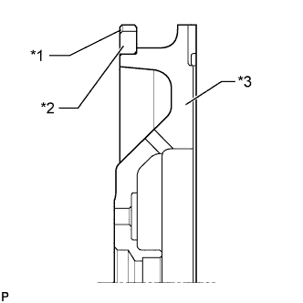 |
Равномерно прогрейте коронную шестерню с помощью горелки до температуры около 200°C (392°F).
| *1 | Паз |
| *2 | Коронная шестерня |
| *3 | Маховик |
С помощью латунного стержня установите коронную шестерню на маховик таким образом, чтобы скошенные зубцы шестерни были направлены к блоку.
| 2. УСТАНОВИТЕ ПРАВЫЙ КРОНШТЕЙН ПЕРЕДНЕЙ ОПОРЫ ДВИГАТЕЛЯ № 1 |
Установите правый кронштейн передней опоры двигателя № 1 и закрепите его 4 болтами.
| 3. УСТАНОВИТЕ ЛЕВЫЙ КРОНШТЕЙН ПЕРЕДНЕЙ ОПОРЫ ДВИГАТЕЛЯ № 1 |
Установите левый кронштейн передней опоры двигателя № 1 и закрепите его 3 болтами.
| 4. УСТАНОВИТЕ ТРУБКУ ЩУПА ПРОВЕРКИ УРОВНЯ МАСЛА |
| 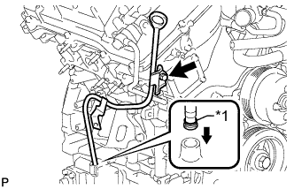 |
Установите новое кольцевое уплотнение в держатель щупа проверки уровня масла.
| *1 | Новое кольцевое уплотнение |
Нанесите на уплотнительное кольцо тонкий слой моторного масла.
Вставьте конец направляющей щупа проверки уровня масла в отверстие для направляющей.
Закрепите трубку щупа проверки уровня масла болтом.
Установите щуп проверки уровня масла.
| 5. УСТАНОВИТЕ НАТЯЖИТЕЛЬ ПОЛИКЛИНОВОГО РЕМНЯ В СБОРЕ |
| 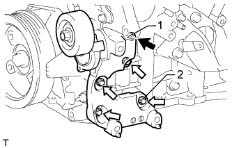 |
Временно установите натяжитель поликлинового ремня и закрепите его 5 болтами.
| Параметр / Устройство | Длина |
| А | 70 мм (2,76 дюйма) |
| B | 33 мм (1,30 дюйма) |
 | болт A |
 | болт B |
Затяните болты 1 и 2 в порядке номеров.
Затяните остальные болты.
| 6. УСТАНОВИТЕ ОПОРНЫЙ РОЛИК № 2 |
Для раздельного типа:
Закрепите 2 крышки опорных роликов, 2 опорных ролика № 2 и 2 крышки опорных роликов № 2 с помощью 2 болтов.
Для интегрированного типа:
Установите 2 опорных ролика № 2 и закрепите их 2 болтами.
| 7. УСТАНОВИТЕ ОПОРНЫЙ РОЛИК № 1 |
| 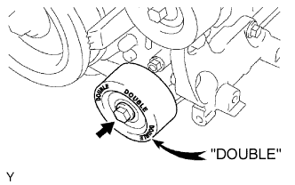 |
Закрепите опорный ролик № 1 болтом.
| 8. УСТАНОВИТЕ ПЕРЕПУСКНОЙ ПАТРУБОК ОХЛАЖДАЮЩЕЙ ЖИДКОСТИ В СБОРЕ (для моделей с масляным радиатором) |
| 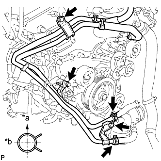 |
Установите перепускной патрубок охлаждающей жидкости и закрепите его 3 болтами.
Подсоедините 2 шланга.
| *a | Вверх |
| *b | Назад |
| 9. УСТАНОВИТЕ ВПУСКНОЙ КОЛЛЕКТОР |
| 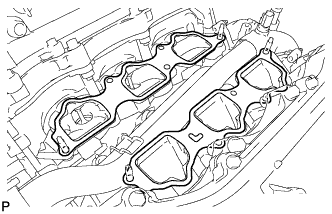 |
На каждую головку блока цилиндров установите новую прокладку.
Установите впускной коллектор на головки блока цилиндров.
| 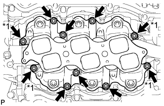 |
Вверните 6 болтов и 4 гайки и равномерно затяните их в несколько этапов.
| *1 | Гайка |
| 10. УСТАНОВИТЕ ТОПЛИВНУЮ ФОРСУНКУ В СБОРЕ |
| 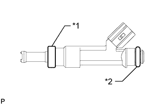 |
Установите новый изолятор на каждую форсунку.
| *1 | Новая изоляция |
| *2 | Новое кольцевое уплотнение |
Нанесите небольшой слой шпиндельного масла или бензина на новые кольцевые уплотнения и установите их по одному на каждую топливную форсунку.
Установите все 6 форсунок.
| 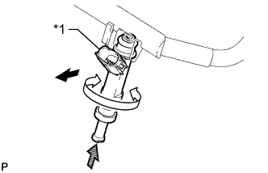 |
Поворачивая каждую топливную форсунку влево и вправо, установите ее на топливную рампу.
| *1 | Часть |
 | Наружу |
 | Поверните |
 | Нажмите |
Расположите топливные форсунки так, чтобы разъемы были направлены наружу.
| 11. УСТАНОВИТЕ ТОПЛИВНУЮ РАМПУ В СБОРЕ |
Разместите топливную рампу с 6 топливными форсунками на впускном коллекторе.
Временно вверните 6 болтов, используемых для крепления топливной рампы, в впускной коллектор.
| 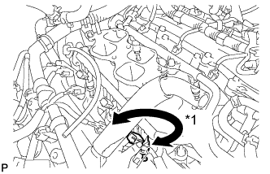 |
Убедитесь, что форсунки вращаются плавно.
| *1 | Поверните |
Расположите топливные форсунки так, чтобы разъемы были направлены наружу.
Затяните 6 болтов.
Подсоедините 6 разъемов топливных форсунок.
| 12. УСТАНОВИТЕ ТОПЛИВОПРОВОД В СБОРЕ |
Закрепите топливопроводы № 1 и № 2 с помощью 2 болтов.
Подсоедините 2 топливопровода (Нажмите здесь).
| 13. УСТАНОВИТЕ ЗАДНЮЮ КРЫШКУ ГОЛОВКИ БЛОКА ЦИЛИНДРОВ |
Временно установите крышку и закрепите ее 3 болтами.
| 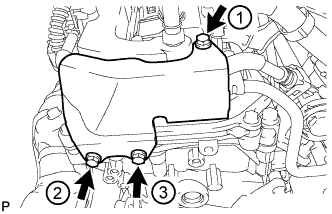 |
Затяните 3 болта в порядке, указанном на рисунке.
| 14. УСТАНОВИТЕ КАТУШКУ ЗАЖИГАНИЯ В СБОРЕ |
Установите 6 катушек зажигания и закрепите их 6 болтами.
| 15. УСТАНОВИТЕ КОМПЛЕКТ КЛАПАНА СИСТЕМЫ СНИЖЕНИЯ ТОКСИЧНОСТИ ОТРАБОТАВШИХ ГАЗОВ № 2 (для моделей со вспомогательной системой подачи воздуха в нейтрализатор) |
Установите комплект клапана системы снижения токсичности отработанных газов № 2 и закрепите его 3 гайками.
| 16. УСТАНОВИТЕ КОМПЛЕКТ КЛАПАНА СИСТЕМЫ СНИЖЕНИЯ ТОКСИЧНОСТИ ОТРАБОТАВШИХ ГАЗОВ (для моделей со вспомогательной системой подачи воздуха в нейтрализатор) |
Установите комплект клапана системы снижения токсичности отработанных газов и закрепите его 3 гайками.
| 17. УСТАНОВИТЕ ПАТРУБОК ОТОПИТЕЛЯ В СБОРЕ |
Для моделей без подогревателя:
Установите патрубок отопителя в сборе и подсоедините 2 шланга.
Для моделей с подогревателем:
Установите патрубок отопителя в сборе и подсоедините 3 шланга.
| 18. УСТАНОВИТЕ ЖГУТ ЭЛЕКТРОПРОВОДКИ ДВИГАТЕЛЯ |